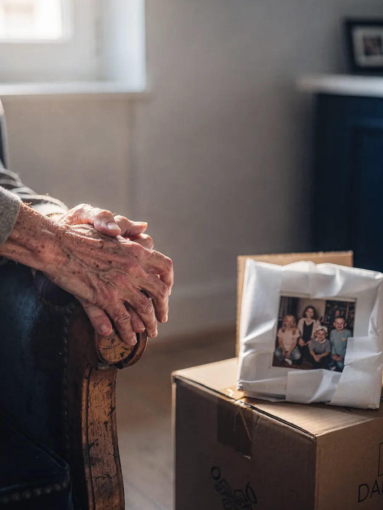

Seniorenumzug – mit Zeit, Ruhe und einem Ansprechpartner
Der Wechsel ins Alterszentrum oder in eine kleinere Wohnung ist oft ein grosser Schritt. ZÜGELKLAR nimmt sich dafür Zeit: Wir planen den Umzug in Ruhe, beziehen Angehörige ein und übernehmen auf Wunsch auch Räumung und Reinigung der bisherigen Wohnung – mit einem festen Ansprechpartner für alle Fragen.

SymbolbildEin Umzug, der mehr ist als Transport
Nach vielen Jahren in derselben Wohnung oder im Einfamilienhaus hängen an vielen Dingen Erinnerungen. Deshalb arbeiten wir ohne Hektik, erklären jeden Schritt und nehmen Rücksicht auf das Tempo der Person, die umzieht.
Bei der Besichtigung – vor Ort oder per Fotos und Video über WhatsApp – klären wir, wie viel Platz am neuen Ort zur Verfügung steht und welche Möbel dort sinnvoll sind. Viele Alterszentren geben Zimmergrösse und Ausstattung vor; diese Angaben fliessen direkt in die Planung ein.
Wenn es hilft, verteilen wir die Arbeit auf mehrere kürzere Termine. Packen, Aussortieren und der eigentliche Umzugstag müssen nicht am selben Tag stattfinden.
Wir sprechen direkt mit der Person, die umzieht, und nicht nur über sie. Wünsche, Bedenken und Gewohnheiten nehmen wir ernst.
Gemeinsam auswählen, was mitkommt
Meist passt nur ein Teil des bisherigen Hausrats in das neue Zuhause. Wir helfen, die Auswahl übersichtlich zu machen, und kennzeichnen klar, was mitkommt, was an Angehörige geht und was geräumt wird.
Hilfreich ist oft ein einfacher Grundriss des neuen Zimmers, in den die wichtigsten Möbel eingezeichnet werden. So lässt sich früh sehen, ob der Lieblingssessel und der Sekretär Platz finden.
Für Gegenstände, deren Zukunft noch offen ist, lohnt sich eine separate Kategorie. Sie können nach dem Umzug in Ruhe entschieden werden, bevor die Räumung beginnt.
- Lieblingsmöbel und persönliche Gegenstände zuerst einplanen
- Grundriss oder Masse des neuen Zimmers als Grundlage nutzen
- Gegenstände für Angehörige separat kennzeichnen und transportieren
- Brauchbares und zu Entsorgendes sauber trennen
Angehörige einbeziehen
Oft organisieren Töchter, Söhne oder andere Vertrauenspersonen den Umzug mit, manchmal aus der Ferne. Wir stimmen uns mit allen ab, die Sie benennen, und halten Termine und Leistungen in der schriftlichen Offerte fest. So wissen alle Beteiligten, was vereinbart ist.
Sie haben dabei einen festen Ansprechpartner. Fragen müssen nicht mehrmals erklärt werden, und Änderungen besprechen wir direkt mit der verantwortlichen Person.
Auf Wunsch kann eine angehörige Person bei der Besichtigung und am Umzugstag dabei sein. Wer was entscheidet, klären wir vorab, damit am Umzugstag niemand unter Druck gerät.
Auch Hausarzt, Spitex oder die Leitung des Alterszentrums haben oft Termine, die berücksichtigt werden müssen. Wenn Sie uns diese mitteilen, planen wir den Umzug so, dass er sich gut in den Alltag einfügt und niemand gehetzt wird.
Räumung und Reinigung mit Abnahmegarantie
Nach dem Umzug bleibt die bisherige Wohnung oder das Haus zurück. Auf Wunsch übernehmen wir die Räumung bis hin zur ganzen Haushaltsauflösung, die fachgerechte Entsorgung und die Umzugsreinigung mit Abnahmegarantie: Beanstandet die Verwaltung berechtigt einen Punkt aus dem vereinbarten Umfang, bessern wir kostenlos nach.
Umzug, Räumung und Reinigung können an verschiedenen Tagen stattfinden. So bleibt Zeit, in Ruhe Abschied zu nehmen.
Bei der Räumung achten wir darauf, dass persönliche Unterlagen, Fotos und Andenken nicht versehentlich entsorgt werden. Unklare Gegenstände legen wir beiseite und klären sie mit Ihnen oder Ihren Angehörigen.
Ankommen im neuen Zuhause
Am neuen Ort bauen wir Bett, Schränke und weitere Möbel wieder auf und stellen sie nach Ihren Wünschen. Auf Wunsch packen wir Kartons aus und räumen Kleider und Geschirr ein, damit das neue Zimmer vom ersten Abend an vertraut wirkt.
Mit der Leitung des Alterszentrums stimmen wir Zufahrt, Lift und Zeitfenster vorab ab, damit Bewohnerinnen, Bewohner und Personal möglichst wenig gestört werden.
Auf Wunsch kommen wir nach einigen Tagen noch einmal vorbei, etwa um ein Möbelstück umzustellen oder die letzten Kartons aus der alten Wohnung zu bringen. Solche Folgetermine halten wir in der Offerte fest.
Was den Preis bestimmt
- Menge der Möbel und Kartons, die mitkommen
- Stockwerk und Lift an beiden Adressen
- Trageweg und Zufahrt, zum Beispiel beim Alterszentrum
- Distanz zwischen bisheriger und neuer Adresse
- Zusatzleistungen wie Packen, Räumung, Reinigung oder Folgetermine
Sie erhalten einen Festpreis oder Stundenpreis schriftlich, bevor Sie zusagen. Mehr dazu im Ratgeber Was beeinflusst die Kosten eines Umzugs?
Das brauchen wir für die Offerte
- Bisherige und neue Adresse mit Stockwerk und Lift
- Wunschtermin oder Zeitraum
- Grundriss oder Masse des neuen Zimmers
- Fotos der Räume und der Möbel, die mitkommen
- Name und Telefon der Ansprechperson, falls Angehörige organisieren
Häufige Fragen
Kann ein Angehöriger die Organisation übernehmen?
Ja. Wir stimmen uns mit der Person ab, die Sie benennen, auch wenn sie nicht in der Nähe wohnt. Wichtig ist, dass am Umzugstag jemand erreichbar ist, der Entscheidungen treffen kann.
Was passiert mit Möbeln, die im neuen Zimmer keinen Platz haben?
Sie entscheiden: Wir bringen Stücke zu Angehörigen, räumen sie oder führen sie der fachgerechten Entsorgung zu. Was mit welchem Gegenstand geschieht, halten wir vorab fest.
Können Umzug und Wohnungsräumung an verschiedenen Tagen stattfinden?
Ja. Oft ist es sinnvoll, zuerst umzuziehen und die Wohnung danach in Ruhe zu räumen und zu reinigen. Die Termine planen wir gemeinsam mit Ihnen.